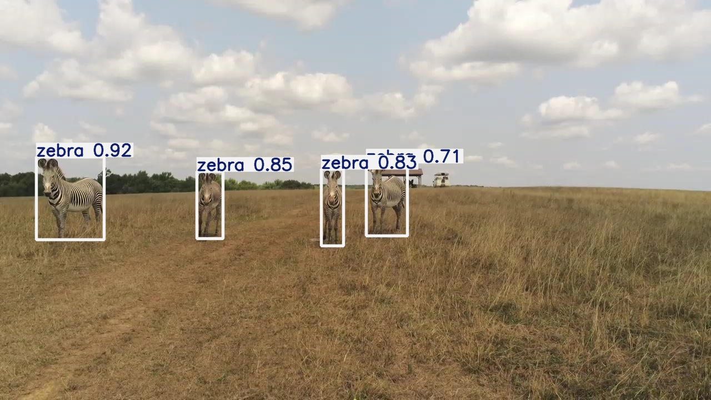
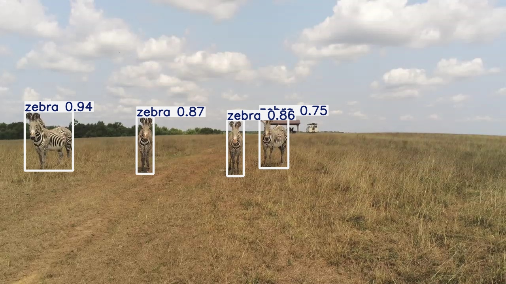
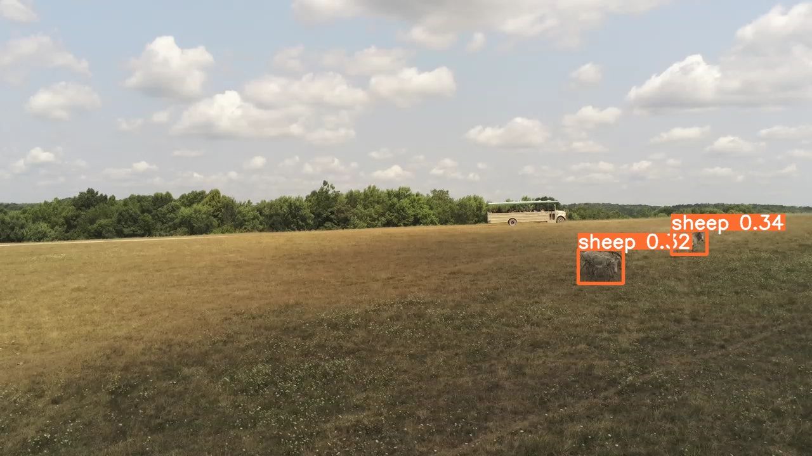

作者抽樣幀序列，非連續即時影片。此處每一幀停留一秒，不代表原始幀率。
目前顯示作者保存的幀畫面。下方保留完整文字與來源。
作者保存的偵測幀畫面，非本輪模型推論。Jenna Kline／Imageomics，WildWing Deployment Dataset，CC0 1.0。教學圖與照片分開呈現。
AI × 生態研究 · WildWing
動物一走動，就可能離開畫面。系統要反覆看位置，讓鏡頭繼續留下可分析的影像。

作者抽樣幀序列，非連續即時影片。此處每一幀停留一秒，不代表原始幀率。
目前顯示作者保存的幀畫面。下方保留完整文字與來源。
作者保存的偵測幀畫面，非本輪模型推論。Jenna Kline／Imageomics，WildWing Deployment Dataset，CC0 1.0。教學圖與照片分開呈現。
研究人員希望動物群移動時，仍能留下可分析的畫面。先看作者任務中保存的一組抽樣幀畫面。
照片中的框與標籤是作者保存的偵測結果。這裡依序換張，展示節奏與原始影片分開。
停在第 1380 幀，回看作者當時保存的偵測框。框提供畫面中的位置，讓後續程式知道要看哪裡。
第 1380 幀在這裡放大檢視。原圖中的分數是模型的偵測分數，不等於辨識準確率。
接下來改用三個獨立示意框。先找每個框的中心，再把三個位置取算術平均，得到這組偵測的平均中心。
每個示意框各算一次，得到的是影像位置的平均。原照片與這組教學座標分開呈現。
當平均位置偏離中央範圍，導航規則會決定如何調整取景。這裡只示意水平方向的相對移動，讓平均位置回到中央。
這段只解釋取景原理，不能當作前述幀畫面的實際飛行紀錄。
無人機把畫面送到地面的 GPU 筆電。YOLO 負責找動物，導航程式再依位置資訊產生指令，傳回無人機。
影像辨識使用模型，取景調整依照預先設定的規則。
另一場任務的作者輸出，將畫面中的動物標成 sheep。保留這個結果，才能看見辨識仍有需要檢查的地方。
這是另一場任務的幀畫面，原標籤與分數保持原樣。辨識結果仍要回到影像核對。
回到主序列最後一幀。飛手與動物福利專家在現場監督，必要時可接管；留下的影片，再供研究人員分析動物活動。
試驗在The Wilds保育中心進行。遮擋、影像品質與動物反應，都需要現場人員留意。
所選的十幀作者畫面的位移指令全為零，公開高度欄位亦有儀器問題；本片不以它們還原精確高度或實際修正航跡。移動規則只在獨立教學圖示範，不是重現某次飛行控制。
框、物種標籤與分數已在作者 JPEG 裡。完整原檔不修改；局部放大只改變閱讀範圍。

這張保留作者當時輸出的框和分數；本片不從它推算實際群中心。
zebra_073124_125119 · frame 1380 · 2024-07-31 12:52:34
Jenna Kline／Imageomics，CC0 1.0。點圖可看完整 JPEG。

原作者輸出包含 sheep 標籤。它來自另一任務，不接成主序列的下一刻。
zebra_073124_122452 · frame 3220 · 2024-07-31 12:27:23
Jenna Kline／Imageomics，CC0 1.0。點圖可看完整 JPEG。